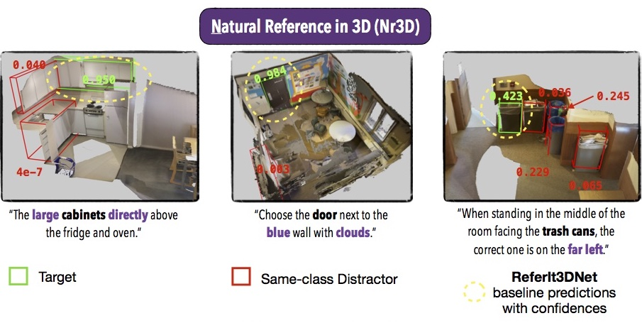
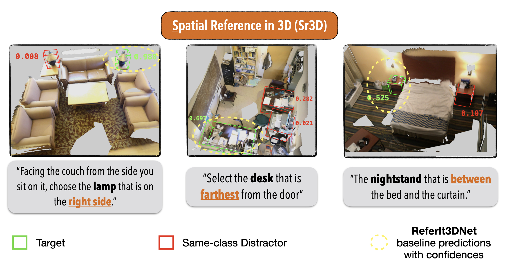

ReferIt3D Benchmarks
Intro
With the ReferIt3D benchmarks, we wish to track and report the ongoing progress in the emerging field of language-assisted understanding and learning in real-world 3D environments. To this end, we investigate the same questions present in the ReferIt3D paper and compare methods that try to identify a single 3D object among many of a real-world scene, given appropriate referential language.Specifically we consider:
- How well such learning methods work when the input language is Natural as produced by speaking humans referring to the object (Nr3D challenge) vs. being template-based concerning only Spatial relations among the objects of a scene (Sr3D challenge)?
- How such methods are affected when we vary the number of same-to-the-target-class distracting instances in the 3D scene? E.g., when handling an "Easy" case, where the system has to find the target among two armchairs vs. a "Hard" case, where it has to find it among at least three?
- Last, how such methods perform when the input language is View-Dependent e.g., "Facing the couch, pick the ... on your right side", vs. being View-Independent e.g., "It's the ... between the bed and the window".
Rules
Please use our published datasets following the official ScanNet train/val splits. Since in these benchmarks we tackle the identification problem among all objects in a scene (and not only among the same-class distractors), when using the Nr3D make sure to use only the utterances where the target-class is explicitly mentioned (mentions_target_class=True) and which where guessed correctly by the human listener (correct_guess=True).To download the pre-processed datasets that reflect exactly the same input we gave to our proposed network (where the filters mentioned above are pre-applied), use the following links:
Otherwise, If you want to download the raw datasets instead, please use the following links: (Nr3D, Sr3D).
Note: The official code of Referit3D paper for training/testing takes as input the raw datasets because it applies the filters mentioned above on the fly.
Nr3D Challenge
| Paper | Overall | Easy | Hard | View-Dependent | View-Independent |
|---|---|---|---|---|---|
| ReferIt3D | 35.6% | 43.6% | 27.9% | 32.5% | 37.1% |
| FFL-3DOG | 41.7% | 48.2% | 35.0% | 37.1% | 44.7% |
| Text-Guided-GNNs | 37.3% | 44.2% | 30.6% | 35.8% | 38.0% |
| InstanceRefer | 38.8% | 46.0% | 31.8% | 34.5% | 41.9% |
| TransRefer3D | 42.1% | 48.5% | 36.0% | 36.5% | 44.9% |
| LanguageRefer | 43.9% | 51.0% | 36.6% | 41.7% | 45.0% |
| SAT | 49.2% | 56.3% | 42.4% | 46.9% | 50.4% |
| 3DVG-Transformer | 40.8% | 48.5% | 34.8% | 34.8% | 43.7% |
| 3DRefTransformer | 39.0% | 46.4% | 32.0% | 34.7% | 41.2% |
| BEAUTY-DETR | 55.4% | 61.4% | 49.1% | 46.6% | 58.9% |
Sr3D Challenge
| Paper | Overall | Easy | Hard | View-Dependent | View-Independent |
|---|---|---|---|---|---|
| ReferIt3D | 40.8% | 44.7% | 31.5% | 39.2% | 40.8% |
| Text-Guided-GNNs | 45.0% | 48.5% | 36.9% | 45.8% | 45.0% |
| InstanceRefer | 48.0% | 51.1% | 40.5% | 45.4% | 48.1% |
| TransRefer3D | 57.4% | 60.5% | 50.2% | 49.9% | 57.7% |
| LanguageRefer | 56.0% | 58.9% | 49.3% | 49.2% | 56.3% |
| SAT | 57.9% | 61.2% | 50.0% | 49.2% | 58.3% |
| 3DVG-Transformer | 51.4% | 54.2% | 44.9% | 44.6% | 51.7% |
| 3DRefTransformer | 47.0% | 50.7% | 38.3% | 44.3% | 47.1% |
| BEAUTY-DETR | 67.1% | 68.7% | 63.2% | 53.2% | 67.7% |